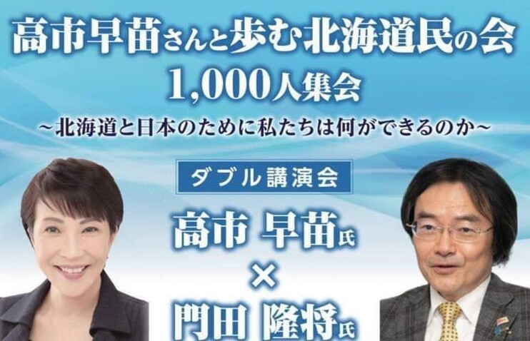
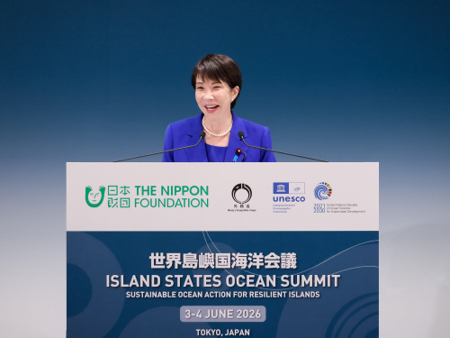
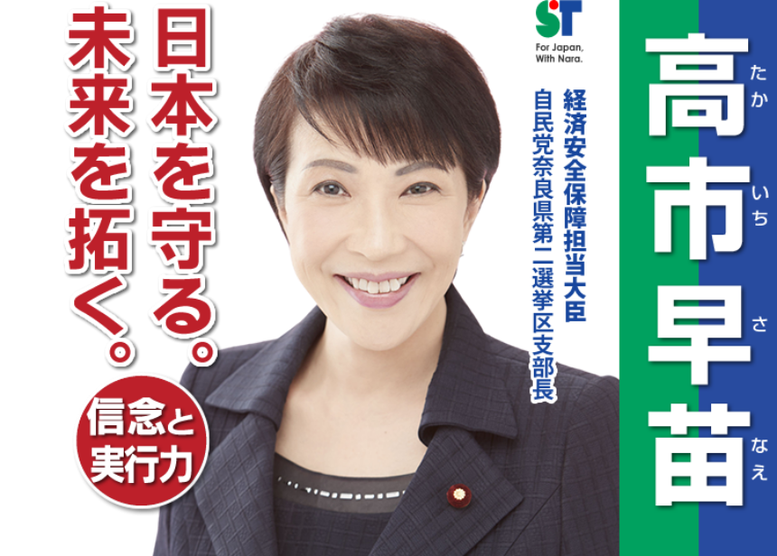

高市早苗さんと歩む北海道民の会 1,000人集会
いよいよ北海道にも高市早苗さんの全国行脚の集会が参ります。いまの政治で正論の持論を速球で投げられるのは高市早苗しかおりません。みんなで高市さんを応援しましょう。

自民党本部
SANAE TAKAICHI
後援会Information
【お知らせ】後援会サイトを公開しました。
MORE ＋Activity

いよいよ北海道にも高市早苗さんの全国行脚の集会が参ります。いまの政治で正論の持論を速球で投げられるのは高市早苗しかおりません。みんなで高市さんを応援しましょう。
Profile

Support
後援会では、活動を支えてくださる皆さまを募集しています。入会方法、活動内容、会費の有無などをこちらに掲載できます。
Contact
後援会へのお問い合わせ、入会に関するご相談は、下記フォームよりお願いいたします。